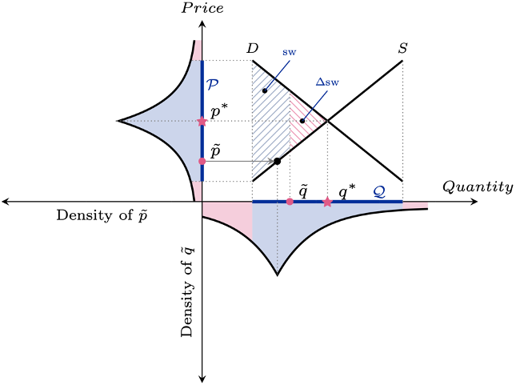

<!DOCTYPE html PUBLIC "-//W3C//DTD XHTML 1.0 Strict//EN"
   "http://www.w3.org/TR/xhtml1/DTD/xhtml1-strict.dtd">
<html xml:lang="en" xmlns="http://www.w3.org/1999/xhtml" lang="en">

<head>
	<link rel="icon" type="image/png" href="icon.png"/>
	<!DOCTYPE html>
<html>
<body>

<h2></h2>


</body>
</html>
	<title>
		Milad Hoseinpour
	</title>
	<link rel="stylesheet" type="text/css" href="https://fonts.googleapis.com/css2?family=Noto+Sans:ital,wght@0,400;0,700;1,400;1,700&family=Vollkorn&display=swap">
	<link rel="stylesheet" type="text/css" href="http://fonts.googleapis.com/css?family=Alegreya">
	<link rel="stylesheet" type="text/css" href="http://fonts.googleapis.com/css?family=Vollkorn">
	<link rel="stylesheet" href="main.css" type="text/css"/>
</head>

<body>
    
<div id="contentpane">
    
    <div id="content">

    <div id="pagetitle">
        
    <div id="name"> <h1>Milad Hoseinpour</h1>
    <p>Graduate Research Assistant<br/>
    Tarbiat Modares University<br/>
     Email: milad.hoseinpour[at]hotmail.com<br/>
     Find me on <a href="https://www.google.com/url?q=https%3A%2F%2Ftwitter.com%2Fhome&sa=D">Twitter</a> & <a href="https://www.google.com/url?q=http%3A%2F%2Flinkedin.com%2Fin%2Fmohammad-hoseinpour&sa=D">Linkedin</a>.
    
	    
	    
	    </p></div>
	    
	    
	    
	    
	    
   
	    
	    
    
    <div id="headerimg"></div>
    
    </div>
    

<div>
      <h4>About Me</h4>
      
      <p> I am a graduate research assistant in Electrical Transmission and Distribution Networks Laboratory (ETD Lab.) at Tarbiat Modares University, where I am fortunate to be supervised by Prof. Mahmoud-Reza Haghifam. My research lies at the interface of computer science and economics. The high-level objective of my research is to design efficient, scalable, and robust algorithms for future electric power systems, and toward that, I leverage a mix of tools from algorithmic game theory, mechanism design, machine learning, and optimization. 
	  More broadly, I am interested in markets and socio-technical systems, where the performance of the system is profoundly rooted in the interaction between the behavior of users and the underlying technological infrastructure. Meanwhile, due to the growing concerns about privacy, fairness, and other social values, I am interested in embedding these social constraints directly into the design of algorithms.

      <p>Here is my <a href="CV.pdf">CV</a>.</p>
</div>

<hr class="divider" />


<div>
      <h4>Publications</h4>
      
     <div class="paper">
	   <ul>  
         <li><p>Milad Hoseinpour, <b>Mohammad Hoseinpour</b>, Mahdi Haghifam, Mahmoud-Reza Haghifam, "<b>A Differentially Private Mechanism for Local
		 Electricity Markets</b>", IEEE TRANSACTIONS ON SMART GRID, 2022 (Under Review).</p></li><a href="Paper.pdf">[Link]</a>
	</ul>   
         <ul>  
         <li><p> <b>Mohammad Hoseinpour</b>, Milad Hoseinpour, Ali Aghagolzadeh "<b>Accuracy Amplification In Differentially Private Logistic Regression : A Pre-Training
Approach</b>",2022 (In Progress).</p></li>
	</ul>   
	     
	     
	     
	     
	     
     </div> 
<hr class="divider" />
<div>	
     <h4>Research Projects</h4>
     <div class="paper">
	<ul> 
		<li><b>Privacy Preserving Machine Learning</b><p> B.Sc. Final Project </P> <P> Supervisor : Prof. Ali Aghagolzadeh</P><p> Description : Developing a differentially private logistic regression. </P> <a href="https://github.com/hpourv/DP-Logistic-Regression">[Code]</a> </li>  </ul> 
	
	
	<html>
<body>

<h2></h2>


</body>
</html>
	
	
	
<hr class="divider" />	
	
	     
 <div>   
	     
	
	
     
     


</div>       


<div>

     

</div>

   


    </div>


</div>

    <div id="buffer"></div>
    <div id="footer">   
	 <div>Template by Kira Goldner&#169;</div>
    </div>
    <!-- If you really feel uncomfortable with giving me credit by name on your site, rather than deleting, please at lease uncomment and use the following logo credit. -->
    <!--div id="footer"><div id="logo"> <a href="https://www.kiragoldner.com/" target="_blank"></a></div><div>&#169; Template</div-->

  </body>


</html>
